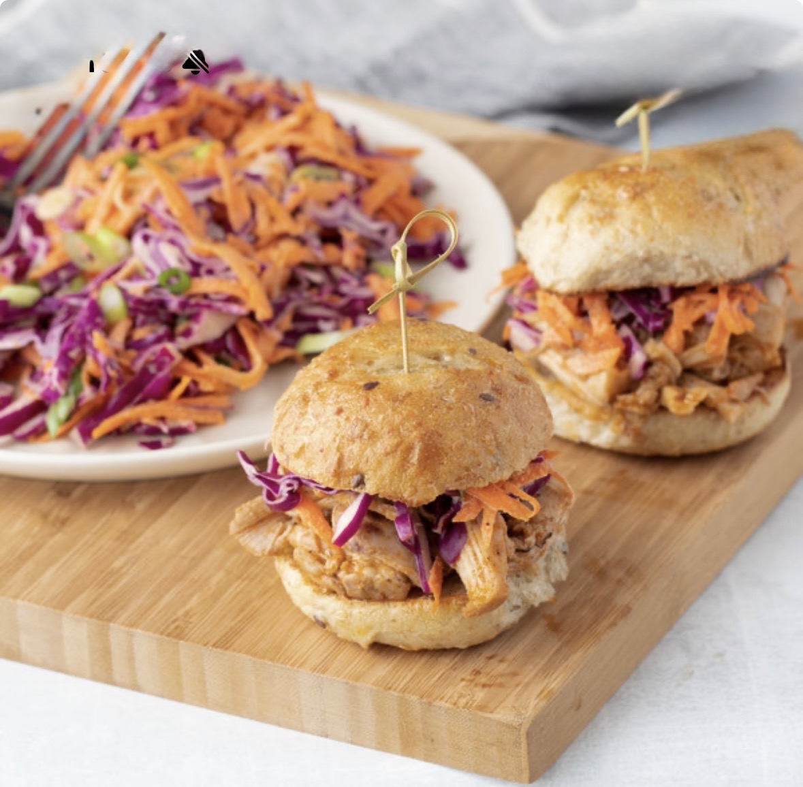

Ingredients
- 2 medium yellow onions, thinly sliced (about 4 cups)
- 4 medium cloves garlic, thinly sliced
- 1 cup low-sodium chicken broth
- 1 tablespoon liquid smoke (optional)
- 1 tablespoon packed dark or light brown sugar
- 1 tablespoon chili powder
- 1 tablespoon kosher salt
- 1/2 teaspoon ground cumin
- 1/4 teaspoon ground cinnamon
- 1 (4- to 4 1/2-pound) boneless or bone-in pork shoulder (also known as pork butt), twine or netting removed
- 1 cup store-bought or homemade tomato-based barbecue sauce
- 1 (12-ounce) package Hawaiian sweet rolls, such as King's
- 3 cups warm pulled pork (about 1 3/4 pounds, recipe above)
- 1 cup store-bought or homemade creamy coleslaw
- 12 sliced dill pickle rounds
Instructions
- Stir 2 thinly sliced medium yellow onions, 4 thinly sliced garlic cloves, 1 cup low-sodium chicken broth, and 1 tablespoon liquid smoke if using in a 5-quart or larger slow cooker. Arrange the onions into an even layer.
- Stir 1 tablespoon packed brown sugar, 1 tablespoon chili powder, 1 tablespoon kosher salt, 1/2 teaspoon ground cumin, and 1/4 teaspoon ground cinnamon together in a small bowl.
- Pat 1 (4 to 4 1/2-pound) pork shoulder dry with paper towels. Place in the slow cooker and rub the spice mixture all over the pork (it's okay if some of the seasoning falls off onto the onions). Cover and cook until the pork is fork tender, 5 to 7 hours on the HIGH setting or 8 to 10 hours on the LOW setting.
- Turn off the slow cooker. Transfer the pork to a rimmed baking sheet. Fit a fine-mesh strainer over a medium heatproof bowl. Pour the onion mixture through the strainer. Return the contents of the strainer to the slow cooker; discard the strained liquid or save for another use.
- Using 2 forks, shred the pork into bite-size pieces, discarding any bone or large pieces of fat. Return the shredded meat to the slow cooker, add 1 cup barbecue sauce, and stir to combine. Cover and keep on the low or warm setting until ready to serve.
- Separate 1 (12-ounce) package Hawaiian sweet rolls into individual rolls.
- For each slider (only assemble the number you plan to eat immediately), split the roll in half with a serrated knife. Place 1/4 cup of the warm pulled pork on the bottom half of the roll, then top with 1 generous tablespoon of the coleslaw and 1 dill pickle round. Close with the top half of the roll.